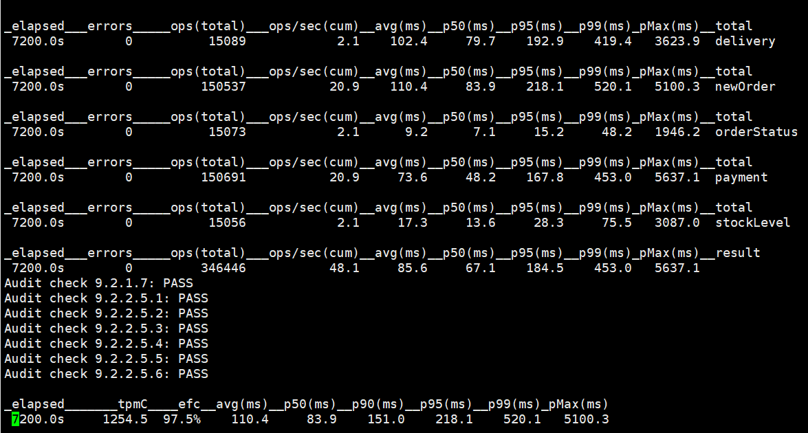
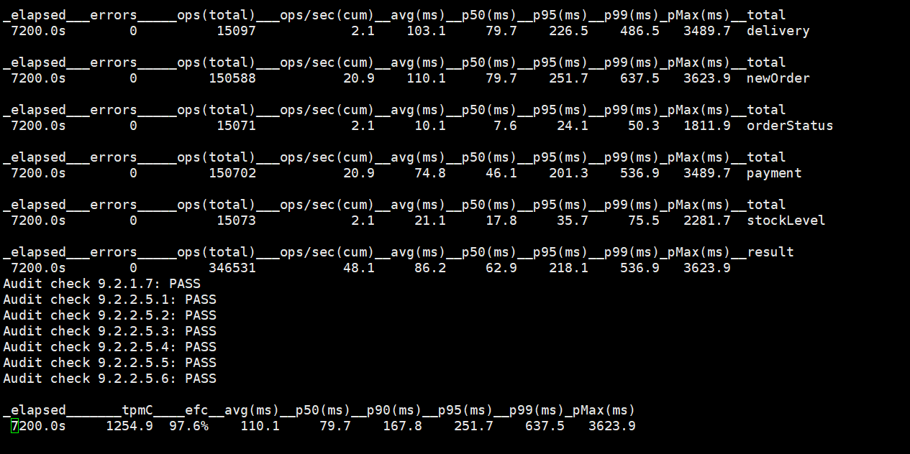
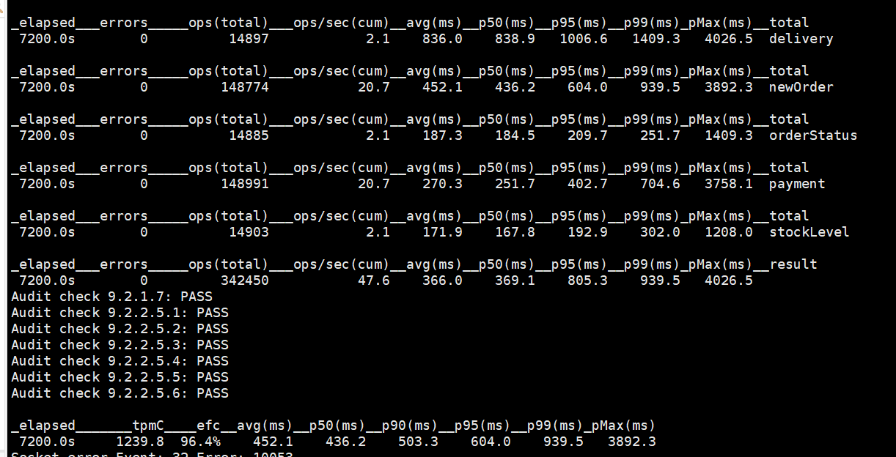
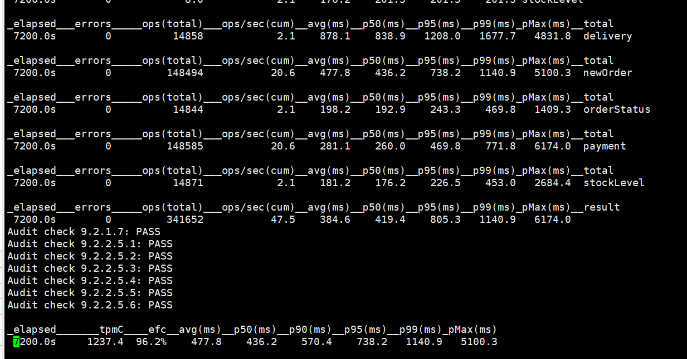
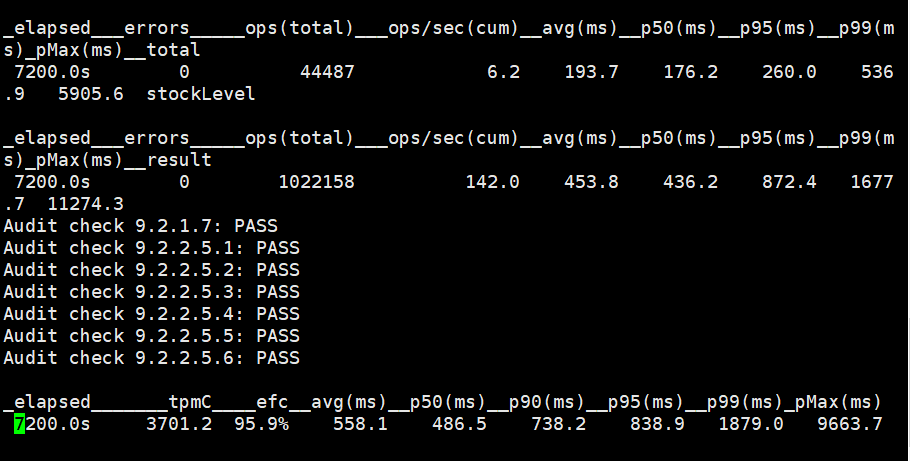
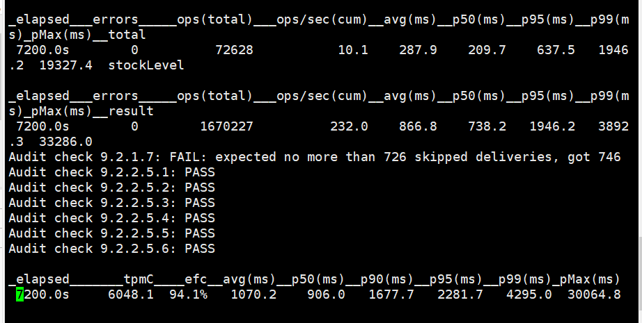
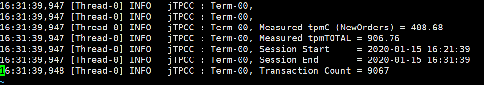

测试与实验¶
TPCC测试截图与结论¶
3节点（非负载均衡）连接单节点，100仓库：¶

5节点（非负载均衡）连接单节点，100仓库：¶

3节点（负载均衡）连接均衡节点，100仓库：¶

5节点（负载均衡）连接均衡节点，100仓库：¶

3节点（负载均衡）连接均衡节点，300仓库：¶

3节点（负载均衡）连接均衡节点，500仓库：¶

mysql单机,100仓库：¶

结论：¶
同等机器性能条件下：
非负载均衡时，cockroachDB的tpmC的数额取决于程序运行节点的机器性能，与节点数量无关。
负载均衡时，cockroachDB的tpmC的数额受到负载均衡节点的机器性能影响，随着均衡到节点数的增加而少量减少。
负载均衡时的tpmC的数额稍微小于非负载均衡时的tpmC的数额。
不管负载均衡或非负载均衡时，tpmC的数额与仓库数成正比例。
相同仓库下，cockroachDB的tpmC的数额远大于单机的MySQL的tpmC的数额。
sql特点比较¶
cockroachDB |
mysql |
oracle |
|
|---|---|---|---|
rowid |
不指定主键默认rowid为主键 |
特定情况下不存在_rowid |
自带rowid |
建表后是否可以添加主键 |
不支持建表后添加主键 |
支持 |
支持 |
CockroachDB在sql上的拓展¶
CockroachDB支持bytes、uuid、json类型，具有自动生成隐藏的rowID、事务上有savepoint概念、有upsert into的操作，WITH ORDINALITY序号注释拓展。